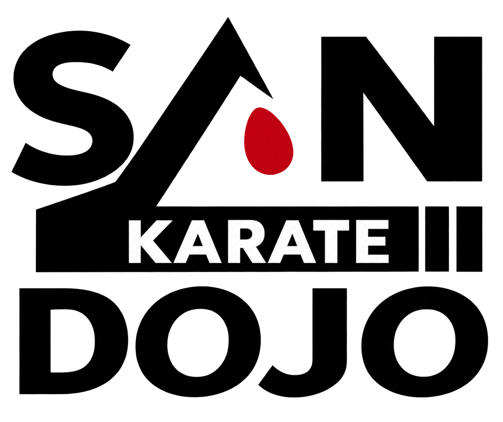

Abrir meu dojo →O sensei ganhou vida.
Cinco maneiras de comemorar cada fase aprovada e expressões que acompanham os dias de prática.
Um final para celebrar
As cinco comemorações alternam antes de repetir. O resultado fica disponível durante o vídeo.
Como está o seu sensei?
Esta é uma demonstração. Experimentar aqui não altera contas, atividades, faixas, XP ou dias de prática. No app, uma atividade concluída marca o dia, mesmo quando é preciso revisar.